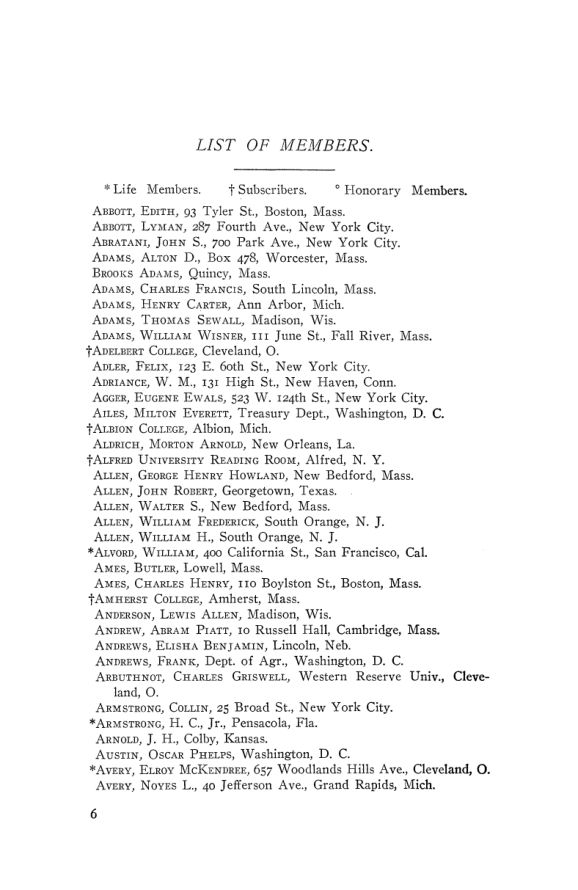

O manual de 1906: retrato de uma profissão com 1.032 nomes
Leitura: 3 min
O manual de 1906 traz o estatuto revisto, a lista de sócios, as atas de Baltimore e as teses de doutorado em curso: um retrato de como a economia americana se organizava como profissão.


Em dezembro de 1905, o secretário Frank A. Fetter informou que a associação tinha 1.032 sócios e assinantes, três a mais que no ano anterior. Oito sócios haviam morrido, 32 renunciado e 5 sido excluídos; 52 tinham entrado. Era o seu quinto e último relatório. Nele, registrava que vira a associação passar de 802 sócios a mais de mil e o saldo do caixa subir de US$ 1.372 para US$ 4.803.
Esses números estão no Hand Book of the American Economic Association de 1906, suplemento do nº 3 do vol. 7 da terceira série das Publications. O manual reúne o propósito da associação, o estatuto revisto na reunião de dezembro de 1905, a lista de sócios, as atas da décima oitava reunião anual e a terceira lista de teses de doutorado em economia política em andamento nas universidades americanas.
O retrato é o de uma profissão em formação. Professores de todas as universidades e das principais faculdades estão presentes, mas o texto de abertura diz que um número ainda maior de sócios vem de fora da academia: homens de negócios, jornalistas, advogados e políticos. Há quase duzentos assinantes, entre eles as principais bibliotecas do país. A associação declara não ter credo nem partido, e seus dirigentes não recebem pagamento.
A lista de teses mostra onde e sobre o que se formavam os economistas. Columbia aparece com 27 nomes, Wisconsin com 16, Harvard com 13 e Johns Hopkins com 11, esta quase toda dedicada aos sindicatos americanos. Predominam histórias financeiras de estados e cidades, ferrovias, trabalho, tarifas e moeda. Há candidatos vindos do Japão, da Índia, da Suécia e da China, e várias mulheres, de Bryn Mawr, Radcliffe, Columbia e Nebraska. Dois temas dialogam com esta coleção: Frank Hamilton Hankins estuda Adolphe Quetelet como estatístico, e Guy Edward Snider, de Columbia, prepara The taxation of railway gross receipts, previsto para 1906.
Na minha leitura
Na minha leitura, o manual vale como fonte sobre a estrutura da disciplina. Uma associação que mede seu sucesso em sócios e saldo, que discute criar uma revista própria e que organiza um censo das teses em andamento está construindo os instrumentos de uma profissão. A ênfase do estatuto no estudo histórico e estatístico das condições reais da vida industrial, e a quantidade de teses sobre finanças públicas locais, mostram uma economia voltada para a descrição de instituições concretas.
Glossário
- Assinante (subscriber)
- instituição ou pessoa que recebe as publicações sem ser sócia, como as bibliotecas.
- Sócio vitalício (life member)
- sócio que paga uma vez cinquenta dólares e fica isento da anuidade.
- Comitê Executivo
- órgão que cuida dos interesses da associação entre as reuniões anuais.
Artigos desta edição
- American Economic Association — texto institucional (pp. 1–2). Apresenta a associação, seus sócios e assinantes, o histórico das publicações desde março de 1886 e as reuniões conjuntas com a American Historical Association. Anuncia a reunião de 1906 em Providence e um boletim de bibliografia e notas. Afirma que a associação não é órgão de partido, seita ou instituição e que toda a receita vai para publicações e reuniões. JSTOR
- Constitution of the American Economic Association — texto revisto na reunião anual de dezembro de 1905 (pp. 3–5). Fixa como objetivos a pesquisa econômica, em especial o estudo histórico e estatístico das condições reais da vida industrial, as publicações e a plena liberdade de discussão, sem posição partidária. A anuidade é de três dólares; a contribuição vitalícia, de cinquenta. Prevê até 25 sócios honorários estrangeiros e define a diretoria e os comitês Executivo e de Publicações. JSTOR
- List of Members (pp. 6–29). Relação alfabética de sócios e assinantes, com endereço e sinais para sócios vitalícios, assinantes e sócios honorários. Mistura professores, homens públicos, profissionais liberais, faculdades e bibliotecas. JSTOR
- The Eighteenth Annual Meeting — atas; relatórios de Frank A. Fetter (pp. 30–42). Atas da reunião de Baltimore, de 27 a 29 de dezembro de 1905, na Johns Hopkins, com 122 sócios registrados: programa, relatórios do secretário e do tesoureiro, eleição de Jeremiah W. Jenks para a presidência, escolha de Providence para 1906 e a decisão de continuar estudando a criação de uma revista. Os trabalhos apresentados estão comentados no nº 77. JSTOR
- Third List of Doctoral Dissertations in Political Economy in Progress in American Universities and Colleges, January 1, 1906 — Comitê de Publicações (pp. 43–48). Lista, por instituição, as teses em andamento em 1º de janeiro de 1906, com formação do candidato, tema e data provável de conclusão. Os temas vão da economia de Walpole às leis de cereais francesas, das finanças de estados e cidades aos sindicatos, às ferrovias e à relação entre moeda, crédito e preços. JSTOR
Fontes
- American Economic Association (pp. 1–2). JSTOR · Internet Archive (PDF)
- Constitution of the American Economic Association (pp. 3–5). JSTOR · Internet Archive (PDF)
- List of Members (pp. 6–29). JSTOR · Internet Archive (PDF)
- The Eighteenth Annual Meeting (pp. 30–42). JSTOR · Internet Archive (PDF)
- Third List of Doctoral Dissertations in Political Economy in Progress in American Universities and Colleges, January 1, 1906 (pp. 43–48). JSTOR · Internet Archive (PDF)
- Sumário da edição no JSTOR: Publications of the American Economic Association, 3ª série, vol. 7, nº 3 (suplemento).
Documento em domínio público (EUA, publicado antes de 1931), via JSTOR Early Journal Content e Internet Archive. Resumo e comentário do autor deste site, sem afiliação com a American Economic Association. Encontrou um erro? Escreva: a correção é publicada no próprio texto, com data.
← Nº 79 · Gryzanovski, 1906: até onde vai a autoridade dos números Nº 81 · Snider, 1906: Wisconsin e o imposto sobre a receita das ferrovias →